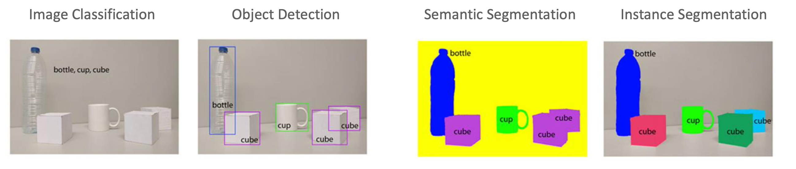
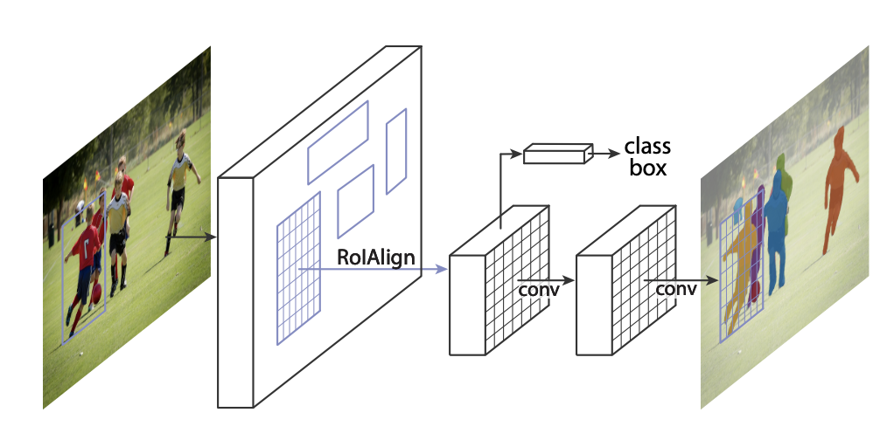
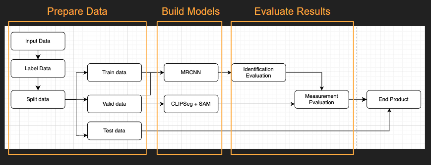
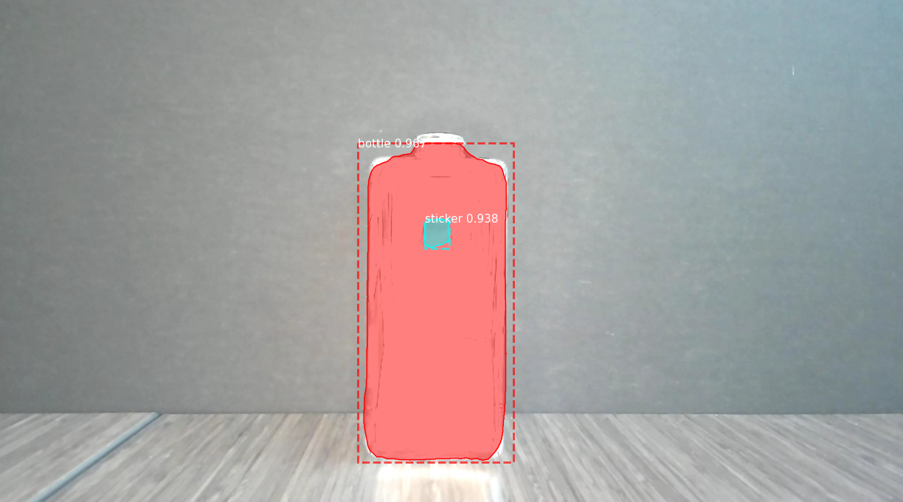
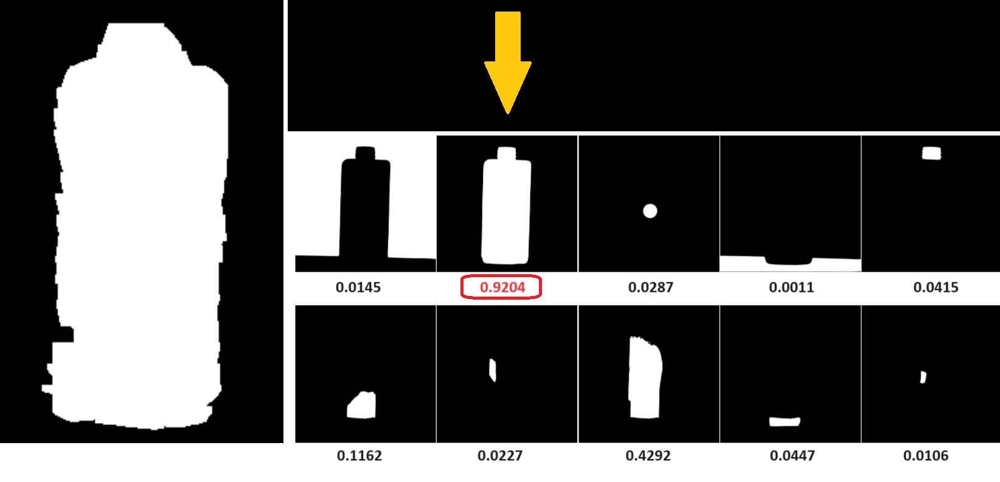

Ever wondered how a driverless car like Tesla navigates the world so seamlessly? The secret lies in computer vision—a technology that enables these cars to “see” their surroundings, identifying objects and understanding their exact locations. But this isn’t just limited to autonomous vehicles. Computer vision is transforming industries, making everyday tasks more efficient and precise.
In partnership with Analytika, my recent capstone project, “Robotic Arm Vision Recognition,” tapped into the incredible potential of computer vision to revolutionize robotic systems. By harnessing the power of cutting-edge models like Mask R-CNN, Segment Anything Model (SAM), and ClipSeg, we pushed the boundaries of what robotic arms can achieve in a real-world factory setting.
Problem and Motivation
In modern manufacturing, especially on bottle production lines, efficiency and precision are paramount. The challenge? Traditional methods often fell short in accuracy, leading to increased waste and downtime. Typically, each assembly line is tailored to a specific bottle shape and size, requiring manual adjustments during turnover to accommodate different types. Our mission was clear: to develop an advanced vision recognition system that could handle this variability with precision and automation, thus improving the production lines’ adaptability, accuracy, and efficiency.
Project Impact and Real-World Applications
The solution we developed had a tangible impact on the production process. By implementing advanced vision recognition and dimension measurement technologies, we reduced errors in assembly, improved overall efficiency, and allowed for quicker adaptation to new bottle designs. This not only cut down on waste but also optimized production speed, directly translating to cost savings for the factory.
Beyond this specific application, the techniques we employed—particularly the integration of Mask R-CNN or SAM together with ClipSeg—can be applied to other industries. From automotive to consumer electronics, any field that relies on robotic precision can benefit from the advancements made in this project.
Background and Acknowledgement
Before we dive into the details and theory, I’d like to take a moment to acknowledge the incredible tools that made this project possible:
- Matterport, Inc. for developing the Mask R-CNN model and making it so accessible. Their repository and tutorial are great starting points for anyone interested in working with Mask R-CNN.
- MetaAI for the Segment Anything Model (SAM). You can explore their work through their repository and even try out the model in action here.
- Hugging Face for providing an insightful tutorial on CLIPSeg. If you’re curious about how to use this model, check out their tutorial here.
n computer vision, image classification involves identifying and labeling the entire image with a single category. Object localization goes a step further by not only identifying the objects within an image but also pinpointing their locations using bounding boxes. Semantic segmentation assigns a class label to every pixel in an image, grouping pixels that belong to the same object or region but without distinguishing between multiple instances of the same object. Instance segmentation combines both tasks, distinguishing and segmenting each individual object instance within an image, even if they belong to the same class, providing the most detailed level of analysis. For our project, instance segmentation is crucial as it allows us to accurately identify and separate each bottle component, ensuring precise manipulation and measurement on the assembly line.

Theory and Approach
Mask R-CNN: Precision in Object Detection and Segmentation
Mask R-CNN (MRCNN) excels in both object detection and generating precise segmentation masks, crucial for dimensional analysis. By leveraging a pre-trained ResNet101 backbone on the COCO dataset, we sped up training while enhancing accuracy. Data augmentation techniques, such as flips and rotations, helped prevent overfitting. Despite its strengths, MRCNN requires substantial labeled data, which can be labor-intensive. Given the specific needs of our project—detecting bottle components like pumps and stems—training and fine-tuning MRCNN proved to be the most effective approach. We used IoU and recall metrics to ensure high segmentation accuracy, directly impacting the precision of our dimensional measurements.

CLIPSeg + SAM: Leveraging Advanced Segmentation Models
We combined the strengths of CLIPSeg and SAM to achieve optimal segmentation. CLIPSeg, pre-trained on 400 million image-text pairs, allows for zero-shot image segmentation using text prompts, making it versatile. However, its lower resolution can result in blurred boundaries, less ideal for precise measurements. SAM, on the other hand, excels in high-precision segmentation with its extensive training on a diverse dataset of 11 million images. While SAM lacks text-prompt capabilities, it provides superior accuracy. By integrating CLIPSeg’s text-based identification with SAM’s precision, we achieved more accurate and flexible segmentation.

Pixel Ratio Conversion: Translating Pixels to Real-World Dimensions
To convert bounding box measurements into real-world dimensions, we used pixel ratio conversion equations. By establishing a pixel-to-actual-dimension ratio using the known diameter of a sticker, we could accurately translate the height and width of the components into centimeters, ensuring precise dimensional predictions crucial for quality control in the assembly process.
Implementation
The implementation involved several key steps:
Data Collection and Processing: We gathered a diverse dataset of images containing various objects to train and validate the models. The dataset included images with different lighting conditions, backgrounds, and object orientations. Labelling was done using Segments.ai.
Model Training and Fine-Tuning: Mask R-CNN, SAM, and ClipSeg were trained and fine-tuned on the collected dataset. Each model was optimized to perform specific tasks—Mask R-CNN for object detection and segmentation, SAM for versatile segmentation, and ClipSeg for semantic understanding.
Measurement: Measure bottle components dimension using mathematical transformations which is essentially pixel-ratio-dimensions.
Evaluation: Assess model performance using metrics such as Intersection over Union (IoU) and recall. Evaluate dimension measurement performance using metrics such as percentage error.

A Comparative Analysis: MRCNN vs CLIPSeg + SAM
We used the Mean Average Percentage Error (MAPE) to evaluate the performance of MRCNN versus the CLIPSeg + SAM combination. CLIPSeg + SAM consistently outperformed MRCNN in predicting bottle dimensions, with lower percentage errors in height (2.35% vs. 9.96%) and width (3.22% vs. 12.2%). Despite some variability, CLIPSeg + SAM demonstrated superior accuracy overall. Improving image quality is expected to further enhance this combination’s precision, leading to even greater accuracy in future applications.


Challenges and Learnings
The dataset size significantly impacted MRCNN’s performance. Expanding the dataset would likely improve the model’s generalization ability. Additionally, using higher-quality images with clear component boundaries could enhance segmentation accuracy. Incorporating a cropping step in the pre-processing pipeline might help focus the model on relevant areas, potentially improving performance. However, these enhancements were beyond the current project scope due to time and resource constraints.
Future Work and Opportunities for Improvement
Looking ahead, there are several opportunities to extend this work. Expanding the dataset, incorporating new models, or experimenting with different architectures could yield even better results. Furthermore, the integration of additional features like real-time processing or multi-view analysis could enhance the system’s capability and applicability across various industries.
Conclusion
The “Robotic Arm Vision Recognition” project showcased the transformative potential of advanced computer vision techniques in enhancing robotic systems. By integrating Mask R-CNN, Segment Anything Model (SAM), and CLIPSeg, we achieved significant improvements in object detection, segmentation, and classification. This project underscores the importance of leveraging state-of-the-art technologies to tackle complex challenges in computer vision and robotics.
As technology continues to advance, integrating such innovative models will undoubtedly lead to even more capable and intelligent robotic systems. The insights gained from this project provide a solid foundation for future developments in robotic vision technology.
Citation
@online{voon2024,
author = {Voon, Sharon},
title = {Robotic {Arm} {Vision} {Recognition}},
date = {2024-08-28},
url = {https://s-voon.github.io/blogs/robotic_arms_vision_recognition/},
langid = {en}
}